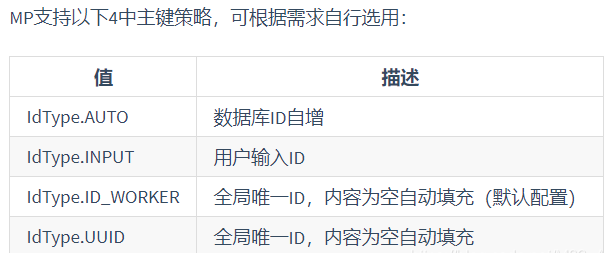
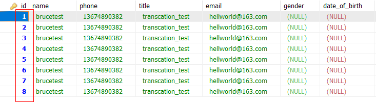
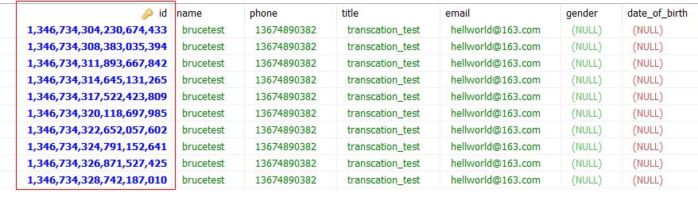

<!DOCTYPE html>


<html lang="zh-Hans">
  

    <head>
      <meta charset="utf-8" />
        
      <meta name="description" content="Technical output and problem solving record" />
      
      <meta
        name="viewport"
        content="width=device-width, initial-scale=1, maximum-scale=1"
      />
      <title>MyBatisPlus使用 |  Tunan`s Blog</title>
  <meta name="generator" content="hexo-theme-ayer">
      
      <link rel="shortcut icon" href="/favicon.ico" />
       
<link rel="stylesheet" href="/dist/main.css">

      <link
        rel="stylesheet"
        href="https://cdn.jsdelivr.net/gh/Shen-Yu/cdn/css/remixicon.min.css"
      />
      
<link rel="stylesheet" href="/css/custom.css">
 
      <script src="https://cdn.jsdelivr.net/npm/pace-js@1.0.2/pace.min.js"></script>
       
 

      <link
        rel="stylesheet"
        href="https://cdn.jsdelivr.net/npm/@sweetalert2/theme-bulma@5.0.1/bulma.min.css"
      />
      <script src="https://cdn.jsdelivr.net/npm/sweetalert2@11.0.19/dist/sweetalert2.min.js"></script>

      <!-- mermaid -->
      
      <style>
        .swal2-styled.swal2-confirm {
          font-size: 1.6rem;
        }
      </style>
    </head>
  </html>
</html>


<body>
  <div id="app">
    
      
    <main class="content on">
      <section class="outer">
  <article
  id="post-MyBatisPlus使用"
  class="article article-type-post"
  itemscope
  itemprop="blogPost"
  data-scroll-reveal
>
  <div class="article-inner">
    
    <header class="article-header">
       
<h1 class="article-title sea-center" style="border-left:0" itemprop="name">
  MyBatisPlus使用
</h1>
 

      
    </header>
     
    <div class="article-meta">
      <a href="/2022/02/01/MyBatisPlus%E4%BD%BF%E7%94%A8/" class="article-date">
  <time datetime="2022-02-01T11:26:47.000Z" itemprop="datePublished">2022-02-01</time>
</a> 
  <div class="article-category">
    <a class="article-category-link" href="/categories/Mybatis/">Mybatis</a>
  </div>
  
<div class="word_count">
    <span class="post-time">
        <span class="post-meta-item-icon">
            <i class="ri-quill-pen-line"></i>
            <span class="post-meta-item-text"> Word count:</span>
            <span class="post-count">1.2k</span>
        </span>
    </span>

    <span class="post-time">
        &nbsp; | &nbsp;
        <span class="post-meta-item-icon">
            <i class="ri-book-open-line"></i>
            <span class="post-meta-item-text"> Reading time≈</span>
            <span class="post-count">5 min</span>
        </span>
    </span>
</div>
 
    </div>
      
    <div class="tocbot"></div>


  
    <div class="article-entry" itemprop="articleBody">
       
  <h1 id="mp是什么"><a href="#mp是什么" class="headerlink" title="mp是什么"></a>mp是什么</h1><p>是MyBatis的增强工具。</p>
<h1 id="mp入门"><a href="#mp入门" class="headerlink" title="mp入门"></a>mp入门</h1><p>1、添加SpringBoot项目的依赖<span id="more"></span></p>
<pre><code class="xml">&lt;!--Mybatis-plus--&gt;
&lt;dependency&gt;
    &lt;groupId&gt;com.baomidou&lt;/groupId&gt;
    &lt;artifactId&gt;mybatis-plus-boot-starter&lt;/artifactId&gt;
    &lt;version&gt;3.0.5&lt;/version&gt;
&lt;/dependency&gt;

&lt;!--Mysql--&gt;
&lt;dependency&gt;
    &lt;groupId&gt;mysql&lt;/groupId&gt;
    &lt;artifactId&gt;mysql-connector-java&lt;/artifactId&gt;
&lt;/dependency&gt;

&lt;!--Lombok--&gt;
&lt;dependency&gt;
    &lt;groupId&gt;org.projectlombok&lt;/groupId&gt;
    &lt;artifactId&gt;lombok&lt;/artifactId&gt;
&lt;/dependency&gt;
</code></pre>
<p>2、配置application.properties</p>
<pre><code class="properties">spring.datasource.driver-class-name=com.mysql.cj.jdbc.Driver
spring.datasource.url=jdbc:mysql://localhost:3306/mybaties?serverTimezone=UTC&amp;useUnicode=true&amp;characterEncoding=utf-8
spring.datasource.username=root
spring.datasource.password=123456

# Mybatis Plus 日志 # 控制台输出
mybatis-plus.configuration.log-impl=org.apache.ibatis.logging.stdout.StdOutImpl
</code></pre>
<p>3、编写实体类以及核心接口代码</p>
<p>主要是继承这个BaseMapper类，这里面有各种增删改查操作</p>
<pre><code class="java">@Repository
public interface UserMapper extends BaseMapper&lt;User&gt; &#123;
&#125;
</code></pre>
<p>4、测试</p>
<pre><code class="java">@SpringBootTest
class MpdemoApplicationTests &#123;
    
    @Autowired
    private UserMapper userMapper;

    @Test
    public void findAll()&#123;
        List&lt;User&gt; users = userMapper.selectList(null);
        System.out.println(users);

    &#125;

&#125;
</code></pre>
<h1 id="实现增删改查"><a href="#实现增删改查" class="headerlink" title="实现增删改查"></a>实现增删改查</h1><h2 id="查"><a href="#查" class="headerlink" title="查"></a>查</h2><pre><code class="java">//查询操作
@Test
public void findAll()&#123;
    List&lt;User&gt; users = userMapper.selectList(null);
    System.out.println(users);

&#125;
</code></pre>
<p>分页查询：<br>1、配置插件</p>
<pre><code class="java">/*
     * 分页查询插件
     */
@Bean
public PaginationInterceptor paginationInterceptor()&#123;
    return new PaginationInterceptor();
&#125;
</code></pre>
<p>2、分页查询代码</p>
<p>1）插件Page对象，传入两个参数：当前页和每页记录数</p>
<p>2）调用mp函数</p>
<pre><code class="java">//分页查询
@Test
public void selectByPage()&#123;
    Page&lt;User&gt; page = new Page&lt;&gt;(1,3);
    IPage&lt;User&gt; userPage = userMapper.selectPage(page, null);

    //返回对象得到分页的所有数据
    long pages = userPage.getPages(); //得到分页总页数
    long current = userPage.getCurrent(); //当前页
    List&lt;User&gt; records = userPage.getRecords(); //查询数据集合
    long total = userPage.getTotal(); //总记录数
&#125;
</code></pre>
<h2 id="增"><a href="#增" class="headerlink" title="增"></a>增</h2><pre><code class="java">//添加操作
@Test
public void addUser()&#123;
    User user = new User();
    user.setName(&quot;Luck2&quot;);
    user.setPwd(&quot;2222&quot;);
    int insert = userMapper.insert(user);
    System.out.println(insert);
&#125;
</code></pre>
<p>这里面并没有设置Id，因为Mp有自己的主键自增策略，这里简单做一下记录：</p>
<p></p>
<p>单一应用时，我们一般设置主键自增，即使用@TableId(type=IdType.AUTO)， 数据库中的主键为：</p>
<p></p>
<p>分布式应用时，我们需要生成分布式ID，可以选择使用@TableId(type=IdType.ID_WORKER)，数据库中的主键为：</p>
<p></p>
<p>==注意：==</p>
<ol>
<li>这里如果采用主键自增，需要在建表时检查是否设置了主键自增；如果采用分布式ID，则在实体类中采用Long类型来声明id，在建表时采用bigint类型建立id。</li>
<li>如果想要切换主键生成策略，最好在切换之前对数据表执行<code>TRUNCATE TABLE &#39;table name&#39;</code>操作</li>
</ol>
<h2 id="改"><a href="#改" class="headerlink" title="改"></a>改</h2><pre><code class="java">//修改操作
@Test
public void updateUser()&#123;
    User user = new User();
    user.setId(1496441284989927425L);
    user.setName(&quot;newLuck&quot;);
    int update = userMapper.updateById(user);
    System.out.println(update);
&#125;
</code></pre>
<h2 id="删"><a href="#删" class="headerlink" title="删"></a>删</h2><pre><code class="java">//删除操作
@Test
public void delectById()&#123;
    int i = userMapper.deleteById(1496453291331940354L);
&#125;
</code></pre>
<h1 id="自动填充"><a href="#自动填充" class="headerlink" title="自动填充"></a>自动填充</h1><p>1、添加两个datetime类型字段create_time和update_time</p>
<p>2、实体类更新</p>
<pre><code class="java">private Date createTime;
private Date updateTime;
</code></pre>
<p>3、添加注解</p>
<pre><code class="java">@TableField(fill = FieldFill.INSERT)//添加
private Date createTime;

@TableField(fill = FieldFill.INSERT_UPDATE)//修改
private Date updateTime;
</code></pre>
<p>4、创建类实现接口MetaObjectHandler,重写其中的两个方法，实现自动填充</p>
<pre><code class="java">@Component
public class MyMetaObjectHandler implements MetaObjectHandler &#123;

    //mp执行添加操作
    @Override
    public void insertFill(MetaObject metaObject) &#123;
        this.setFieldValByName(&quot;createTime&quot;,new Date(),metaObject);
        this.setFieldValByName(&quot;updateTime&quot;,new Date(),metaObject);
    &#125;

    //mp执行修改操作
    @Override
    public void updateFill(MetaObject metaObject) &#123;
        this.setFieldValByName(&quot;updateTime&quot;,new Date(),metaObject);
    &#125;
&#125;
</code></pre>
<h1 id="乐观锁CAS"><a href="#乐观锁CAS" class="headerlink" title="乐观锁CAS"></a>乐观锁CAS</h1><p>适用场景：当需要更新一条记录的时候，希望这条记录不会被别人更新，也就是说实现线程安全的数据更新。比如==抢票==环境。</p>
<p>CAS解决ABA问题，通过增加版本号</p>
<p>mp实现</p>
<p>1、表里添加字段version，实体类添加对应属性</p>
<p>2、在实体类版本号属性上添加注解@Version以及自动填充注解</p>
<pre><code class="java">@Version
@TableField(fill = FieldFill.INSERT)//添加
private Integer version;
</code></pre>
<p>3、创建配置类，配置乐观锁插件</p>
<pre><code class="java">@Configuration
@MapperScan(&quot;com.tunan.mpdemo.mapper&quot;)
public class MpConfig &#123;

    /*
     * 乐观锁插件
     */
    @Bean
    public OptimisticLockerInterceptor optimisticLockerInterceptor()&#123;
        return new OptimisticLockerInterceptor();
    &#125;

&#125;
</code></pre>
<p>注意要去MyMetaObjectHandler类中增加一条映射，。</p>
<p>4、测试乐观锁</p>
<pre><code class="java">//测试乐观锁
@Test
public void optimisticLocker()&#123;
    //查
    User user = userMapper.selectById(1496453291331940354L);
    //改
    user.setName(&quot;乐观锁&quot;);
    int i = userMapper.updateById(user);
&#125;
</code></pre>
<p>这里mp配置好之后，给做了version的自增操作，因此不需要修改的时候执行自动填充</p>
<h1 id="逻辑删除"><a href="#逻辑删除" class="headerlink" title="逻辑删除"></a>逻辑删除</h1><p>在表中添加字段，作为逻辑删除标志，，每次删除时候修改标志位：0未删 1已删</p>
<p>1、表里添加字段deleted，实体类添加属性</p>
<pre><code class="java">@TableLogic
@TableField(fill = FieldFill.INSERT)//添加
private Integer deleted;
</code></pre>
<p>2、在mp3.1版本以下的，需要增加如下配置</p>
<pre><code class="java">/*
     * 逻辑删除插件
     */
@Bean
public ISqlInjector sqlInjector() &#123;
    return new LogicSqlInjector();
&#125;
</code></pre>
<p>然后执行删除操作就是逻辑删除了，执行的是Update</p>
<h1 id="分页查询"><a href="#分页查询" class="headerlink" title="分页查询"></a>分页查询</h1><p>复杂查询可以用wrapper，这里暂时不作详解</p>
 
      <!-- reward -->
      
    </div>
    

    <!-- copyright -->
    
    <div class="declare">
      <ul class="post-copyright">
        <li>
          <i class="ri-copyright-line"></i>
          <strong>Copyright： </strong>
          
          Copyright is owned by the author. For commercial reprints, please contact the author for authorization. For non-commercial reprints, please indicate the source.
          
        </li>
      </ul>
    </div>
    
    <footer class="article-footer">
       
<div class="share-btn">
      <span class="share-sns share-outer">
        <i class="ri-share-forward-line"></i>
        分享
      </span>
      <div class="share-wrap">
        <i class="arrow"></i>
        <div class="share-icons">
          
          <a class="weibo share-sns" href="javascript:;" data-type="weibo">
            <i class="ri-weibo-fill"></i>
          </a>
          <a class="weixin share-sns wxFab" href="javascript:;" data-type="weixin">
            <i class="ri-wechat-fill"></i>
          </a>
          <a class="qq share-sns" href="javascript:;" data-type="qq">
            <i class="ri-qq-fill"></i>
          </a>
          <a class="douban share-sns" href="javascript:;" data-type="douban">
            <i class="ri-douban-line"></i>
          </a>
          <!-- <a class="qzone share-sns" href="javascript:;" data-type="qzone">
            <i class="icon icon-qzone"></i>
          </a> -->
          
          <a class="facebook share-sns" href="javascript:;" data-type="facebook">
            <i class="ri-facebook-circle-fill"></i>
          </a>
          <a class="twitter share-sns" href="javascript:;" data-type="twitter">
            <i class="ri-twitter-fill"></i>
          </a>
          <a class="google share-sns" href="javascript:;" data-type="google">
            <i class="ri-google-fill"></i>
          </a>
        </div>
      </div>
</div>

<div class="wx-share-modal">
    <a class="modal-close" href="javascript:;"><i class="ri-close-circle-line"></i></a>
    <p>扫一扫，分享到微信</p>
    <div class="wx-qrcode">
      
    </div>
</div>

<div id="share-mask"></div>  
  <ul class="article-tag-list" itemprop="keywords"><li class="article-tag-list-item"><a class="article-tag-list-link" href="/tags/Mybatis/" rel="tag">Mybatis</a></li></ul>

    </footer>
  </div>

   
  <nav class="article-nav">
    
      <a href="/2022/03/16/%E9%A1%B9%E7%9B%AE%E9%9C%80%E6%B1%82%E5%88%86%E6%9E%90%E2%80%94%E2%80%94%E5%8C%BB%E9%99%A2%E8%AE%BE%E7%BD%AE/" class="article-nav-link">
        <strong class="article-nav-caption">上一篇</strong>
        <div class="article-nav-title">
          
            项目需求分析——医院设置
          
        </div>
      </a>
    
    
      <a href="/2022/01/11/JVM%E5%88%9D%E6%8E%A2/" class="article-nav-link">
        <strong class="article-nav-caption">下一篇</strong>
        <div class="article-nav-title">JVM初探</div>
      </a>
    
  </nav>

   
<!-- valine评论 -->
<div id="vcomments-box">
  <div id="vcomments"></div>
</div>
<script src="//cdn1.lncld.net/static/js/3.0.4/av-min.js"></script>
<script src="https://cdn.jsdelivr.net/npm/valine@1.4.14/dist/Valine.min.js"></script>
<script>
  new Valine({
    el: "#vcomments",
    app_id: "",
    app_key: "",
    path: window.location.pathname,
    avatar: "monsterid",
    placeholder: "给我的文章加点评论吧~",
    recordIP: true,
  });
  const infoEle = document.querySelector("#vcomments .info");
  if (infoEle && infoEle.childNodes && infoEle.childNodes.length > 0) {
    infoEle.childNodes.forEach(function (item) {
      item.parentNode.removeChild(item);
    });
  }
</script>
<style>
  #vcomments-box {
    padding: 5px 30px;
  }

  @media screen and (max-width: 800px) {
    #vcomments-box {
      padding: 5px 0px;
    }
  }

  #vcomments-box #vcomments {
    background-color: #fff;
  }

  .v .vlist .vcard .vh {
    padding-right: 20px;
  }

  .v .vlist .vcard {
    padding-left: 10px;
  }
</style>

 
   
     
</article>

</section>
      <footer class="footer">
  <div class="outer">
    <ul>
      <li>
        Copyrights &copy;
        2018-2022
        <i class="ri-heart-fill heart_icon"></i> Tunan
      </li>
    </ul>
    <ul>
      <li>
        
      </li>
    </ul>
    <ul>
      <li>
        
        
        <span>
  <span><i class="ri-user-3-fill"></i>Visitors:<span id="busuanzi_value_site_uv"></span></span>
  <span class="division">|</span>
  <span><i class="ri-eye-fill"></i>Views:<span id="busuanzi_value_page_pv"></span></span>
</span>
        
      </li>
    </ul>
    <ul>
      
    </ul>
    <ul>
      
    </ul>
    <ul>
      <li>
        <!-- cnzz统计 -->
        
        <script type="text/javascript" src='https://s9.cnzz.com/z_stat.php?id=1278069914&amp;web_id=1278069914'></script>
        
      </li>
    </ul>
  </div>
</footer>    
    </main>
    <div class="float_btns">
      <div class="totop" id="totop">
  <i class="ri-arrow-up-line"></i>
</div>

<div class="todark" id="todark">
  <i class="ri-moon-line"></i>
</div>

    </div>
    <aside class="sidebar on">
      <button class="navbar-toggle"></button>
<nav class="navbar">
  
  <div class="logo">
    <a href="/"></a>
  </div>
  
  <ul class="nav nav-main">
    
    <li class="nav-item">
      <a class="nav-item-link" href="/">主页</a>
    </li>
    
    <li class="nav-item">
      <a class="nav-item-link" href="/archives">归档</a>
    </li>
    
    <li class="nav-item">
      <a class="nav-item-link" href="/categories">分类</a>
    </li>
    
    <li class="nav-item">
      <a class="nav-item-link" href="/tags">标签</a>
    </li>
    
    <li class="nav-item">
      <a class="nav-item-link" href="/tags/share">分享</a>
    </li>
    
    <li class="nav-item">
      <a class="nav-item-link" target="_blank" rel="noopener" href="https://blog.csdn.net/North_City_">CSDN</a>
    </li>
    
  </ul>
</nav>
<nav class="navbar navbar-bottom">
  <ul class="nav">
    <li class="nav-item">
      
      <a class="nav-item-link nav-item-search"  title="Search">
        <i class="ri-search-line"></i>
      </a>
      
      
      <a class="nav-item-link" target="_blank" href="/atom.xml" title="RSS Feed">
        <i class="ri-rss-line"></i>
      </a>
      
    </li>
  </ul>
</nav>
<div class="search-form-wrap">
  <div class="local-search local-search-plugin">
  <input type="search" id="local-search-input" class="local-search-input" placeholder="Search...">
  <div id="local-search-result" class="local-search-result"></div>
</div>
</div>
    </aside>
    <div id="mask"></div>

<!-- #reward -->
<div id="reward">
  <span class="close"><i class="ri-close-line"></i></span>
  <p class="reward-p"><i class="ri-cup-line"></i>请我喝杯咖啡吧~</p>
  <div class="reward-box">
    
    <div class="reward-item">
      
      <span class="reward-type">支付宝</span>
    </div>
    
    
    <div class="reward-item">
      
      <span class="reward-type">微信</span>
    </div>
    
  </div>
</div>
    
<script src="/js/jquery-3.6.0.min.js"></script>
 
<script src="/js/lazyload.min.js"></script>

<!-- Tocbot -->
 
<script src="/js/tocbot.min.js"></script>

<script>
  tocbot.init({
    tocSelector: ".tocbot",
    contentSelector: ".article-entry",
    headingSelector: "h1, h2, h3, h4, h5, h6",
    hasInnerContainers: true,
    scrollSmooth: true,
    scrollContainer: "main",
    positionFixedSelector: ".tocbot",
    positionFixedClass: "is-position-fixed",
    fixedSidebarOffset: "auto",
  });
</script>

<script src="https://cdn.jsdelivr.net/npm/jquery-modal@0.9.2/jquery.modal.min.js"></script>
<link
  rel="stylesheet"
  href="https://cdn.jsdelivr.net/npm/jquery-modal@0.9.2/jquery.modal.min.css"
/>
<script src="https://cdn.jsdelivr.net/npm/justifiedGallery@3.7.0/dist/js/jquery.justifiedGallery.min.js"></script>

<script src="/dist/main.js"></script>

<!-- ImageViewer -->
 <!-- Root element of PhotoSwipe. Must have class pswp. -->
<div class="pswp" tabindex="-1" role="dialog" aria-hidden="true">

    <!-- Background of PhotoSwipe. 
         It's a separate element as animating opacity is faster than rgba(). -->
    <div class="pswp__bg"></div>

    <!-- Slides wrapper with overflow:hidden. -->
    <div class="pswp__scroll-wrap">

        <!-- Container that holds slides. 
            PhotoSwipe keeps only 3 of them in the DOM to save memory.
            Don't modify these 3 pswp__item elements, data is added later on. -->
        <div class="pswp__container">
            <div class="pswp__item"></div>
            <div class="pswp__item"></div>
            <div class="pswp__item"></div>
        </div>

        <!-- Default (PhotoSwipeUI_Default) interface on top of sliding area. Can be changed. -->
        <div class="pswp__ui pswp__ui--hidden">

            <div class="pswp__top-bar">

                <!--  Controls are self-explanatory. Order can be changed. -->

                <div class="pswp__counter"></div>

                <button class="pswp__button pswp__button--close" title="Close (Esc)"></button>

                <button class="pswp__button pswp__button--share" style="display:none" title="Share"></button>

                <button class="pswp__button pswp__button--fs" title="Toggle fullscreen"></button>

                <button class="pswp__button pswp__button--zoom" title="Zoom in/out"></button>

                <!-- Preloader demo http://codepen.io/dimsemenov/pen/yyBWoR -->
                <!-- element will get class pswp__preloader--active when preloader is running -->
                <div class="pswp__preloader">
                    <div class="pswp__preloader__icn">
                        <div class="pswp__preloader__cut">
                            <div class="pswp__preloader__donut"></div>
                        </div>
                    </div>
                </div>
            </div>

            <div class="pswp__share-modal pswp__share-modal--hidden pswp__single-tap">
                <div class="pswp__share-tooltip"></div>
            </div>

            <button class="pswp__button pswp__button--arrow--left" title="Previous (arrow left)">
            </button>

            <button class="pswp__button pswp__button--arrow--right" title="Next (arrow right)">
            </button>

            <div class="pswp__caption">
                <div class="pswp__caption__center"></div>
            </div>

        </div>

    </div>

</div>

<link rel="stylesheet" href="https://cdn.jsdelivr.net/npm/photoswipe@4.1.3/dist/photoswipe.min.css">
<link rel="stylesheet" href="https://cdn.jsdelivr.net/npm/photoswipe@4.1.3/dist/default-skin/default-skin.min.css">
<script src="https://cdn.jsdelivr.net/npm/photoswipe@4.1.3/dist/photoswipe.min.js"></script>
<script src="https://cdn.jsdelivr.net/npm/photoswipe@4.1.3/dist/photoswipe-ui-default.min.js"></script>

<script>
    function viewer_init() {
        let pswpElement = document.querySelectorAll('.pswp')[0];
        let $imgArr = document.querySelectorAll(('.article-entry img:not(.reward-img)'))

        $imgArr.forEach(($em, i) => {
            $em.onclick = () => {
                // slider展开状态
                // todo: 这样不好，后面改成状态
                if (document.querySelector('.left-col.show')) return
                let items = []
                $imgArr.forEach(($em2, i2) => {
                    let img = $em2.getAttribute('data-idx', i2)
                    let src = $em2.getAttribute('data-target') || $em2.getAttribute('src')
                    let title = $em2.getAttribute('alt')
                    // 获得原图尺寸
                    const image = new Image()
                    image.src = src
                    items.push({
                        src: src,
                        w: image.width || $em2.width,
                        h: image.height || $em2.height,
                        title: title
                    })
                })
                var gallery = new PhotoSwipe(pswpElement, PhotoSwipeUI_Default, items, {
                    index: parseInt(i)
                });
                gallery.init()
            }
        })
    }
    viewer_init()
</script> 
<!-- MathJax -->

<!-- Katex -->

<!-- busuanzi  -->
 
<script src="/js/busuanzi-2.3.pure.min.js"></script>
 
<!-- ClickLove -->

<!-- ClickBoom1 -->

<!-- ClickBoom2 -->

<!-- CodeCopy -->
 
<link rel="stylesheet" href="/css/clipboard.css">
 <script src="https://cdn.jsdelivr.net/npm/clipboard@2/dist/clipboard.min.js"></script>
<script>
  function wait(callback, seconds) {
    var timelag = null;
    timelag = window.setTimeout(callback, seconds);
  }
  !function (e, t, a) {
    var initCopyCode = function(){
      var copyHtml = '';
      copyHtml += '<button class="btn-copy" data-clipboard-snippet="">';
      copyHtml += '<i class="ri-file-copy-2-line"></i><span>COPY</span>';
      copyHtml += '</button>';
      $(".highlight .code pre").before(copyHtml);
      $(".article pre code").before(copyHtml);
      var clipboard = new ClipboardJS('.btn-copy', {
        target: function(trigger) {
          return trigger.nextElementSibling;
        }
      });
      clipboard.on('success', function(e) {
        let $btn = $(e.trigger);
        $btn.addClass('copied');
        let $icon = $($btn.find('i'));
        $icon.removeClass('ri-file-copy-2-line');
        $icon.addClass('ri-checkbox-circle-line');
        let $span = $($btn.find('span'));
        $span[0].innerText = 'COPIED';
        
        wait(function () { // 等待两秒钟后恢复
          $icon.removeClass('ri-checkbox-circle-line');
          $icon.addClass('ri-file-copy-2-line');
          $span[0].innerText = 'COPY';
        }, 2000);
      });
      clipboard.on('error', function(e) {
        e.clearSelection();
        let $btn = $(e.trigger);
        $btn.addClass('copy-failed');
        let $icon = $($btn.find('i'));
        $icon.removeClass('ri-file-copy-2-line');
        $icon.addClass('ri-time-line');
        let $span = $($btn.find('span'));
        $span[0].innerText = 'COPY FAILED';
        
        wait(function () { // 等待两秒钟后恢复
          $icon.removeClass('ri-time-line');
          $icon.addClass('ri-file-copy-2-line');
          $span[0].innerText = 'COPY';
        }, 2000);
      });
    }
    initCopyCode();
  }(window, document);
</script>
 
<!-- CanvasBackground -->

<script>
  if (window.mermaid) {
    mermaid.initialize({ theme: "forest" });
  }
</script>


    
    

  </div>
</body>

</html>